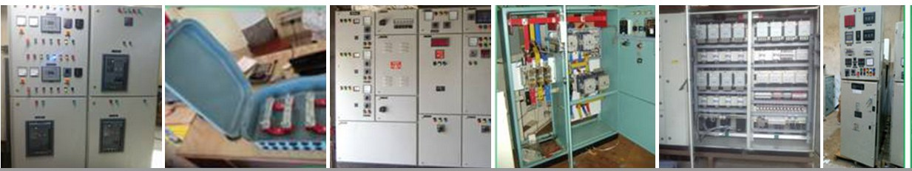

Understanding the Different Types of Electrical Control Panels in Industrial Applications

A variety of electric control panels are required to effectively manage power management in various industrial plants and large enterprises. Below we will discuss some of the important panels that are very essential in the industry.
Motor Control vs Power Control: Key Differences and Applications
Motor control and power control - these two control systems both are important role of the power driven system. Motor control is mainly used for controlling, protecting and optimising the performance of one or more motors. The start, stop and speed of the motor are controlled using a contactor, overload relay, star-delta starter, soft starter or VFD. On the other hand, power control controls the entire power distribution system to a large extent. The main components used here are MCCB, ACB, busbar, power cable, etc., which mainly serve the function of protecting the entire load and supplying power properly. The motor control panel receives electricity from the power panel and then supplies it to the motor in a controlled manner. The main difference between the two is that the motor control focusses on the specific machine or load, while the power control ensures the power supply and safety of the whole system. So these two control systems are interdependent and essential for any industrial organisation or big building.
Power Control
HT VCB Panel As HT VCB Panel Manufacturer in Kolkata, provide the highest quality HT VCB Panel, which is used in high voltage control in heavy industrial installations.
HT (High Tension) VCB (Vacuum Circuit Breaker) panel is installed in voltage system of 11kV or more. This panel protects the system during short circuits, overloads or voltage fluctuations. VCB technology is used for arc control, which is relatively safe and maintenance-free. It is important in power substations and large factories. Machinery and other electrical equipment are protected by HT VCB Panel. The enclosure is usually rated IP54 or IP65, which is dust and waterproof. HT VCB panel with customised design in reliable and durable materials. This panel is very effective in both operation and safety. If your organisation needs HT VCB Panel, our experienced team will give you the right guidance.
PCC Panel
PCC Panels function as the main source for power distribution in an electrical system. It feeds electrical power to associated sub-panels. MCCB, ACB, or SFU this tools help to control the power load. With this panel, it is possible to ensure balanced power consumption. It can also be used for switching and control between generator and main line. It is mostly used in factory, hospitals, shopping malls, etc. Our PCC panel is made according to international standards and is durable. If your organisation is looking for a reliable PCC panel, we offer the best solution.
PDB Panel
As a PDB Panel Manufacturer in Kolkata, provide high quality Power Distribution Board Panel. PDB panel is used for power distribution in various load centres. It also acts as a sub-division of the PCC panel and delivers power to small units. This panel ensures proper power distribution, which helps in circuit protection. PDB panel is commonly used in factory floor, office, or residential building. We provide customised design PDB panel which is suitable according to the site. High-quality breakers and metering units are installed inside. It is a reliable and easily maintained control system.
JB Panel
As a JB Panel Manufacturer in Kolkata, make advanced Junction Box Panel, which is important for power cable connection. The JB panel is usually used to connect the power line and control line. It facilitates the configuration of large lines in small spaces. It makes electrical connections between machines, sensors, or separate parts. We provide IP rated JB Panel which is capable of resisting water and dust. The use of JB Panel is very important in industrial automation, HVAC, and elevator systems. Our JB Panel ensures reliability and durability, at an affordable price.
APFC Panel
APFC Panel is used for industrial power factor development. Boosting energy efficiency and reducing power consumption. The APFC panel works automatically through the condenser bank and the control unit. It adjusts the load by turning the condenser on or off as needed. This method reduces electricity bills very much. APFC panel is commonly used in factory, multistory building, hospital, etc. We provide customised and modern microprocessor-based APFC Panel. This helps to protect to overload and reduces damage of the line. Our APFC Panel is undoubtedly the perfect solution if you want to improve power quality.
The motor control
MCC Panel As MCC Panel Manufacturer in Kolkata, provide high-quality Motor Control Centre Panel which is widely used in the industrial sector. This panel contains separate control units for each motor, such as contactors, overload relays, and fuses. MCC panel is mainly used in all industries. It centrally controls the operation of the motor and helps to distinguish if there is a fault. The panel is dust and water resistant with IP54 or IP65 rating. With this panel, it is easy to turn on and off multiple motors, saving time and labour. Our MCC panel can be customised according to different voltage and current ratings. If you want a reliable motor control solution in your industry, our MCC Panel can be your best choice.
DOL Starter Panel
The DOL Starter Panel starts the motor fast with full power. It is generally used in motors of 5HP to 10HP capacity where the starting current does not cause problems. This makes the operation of the motor easier, faster and safer. DOL Starter Panel is widely used in small factories, water pump houses, borewells, and HVAC units. Cost-effective and easy to install.
FASD Panel As a FASD Panel Manufacturer in Kolkata, manufacture Fully Automatic Star-Delta Starter Panel, which is suitable for large motor drives. The FASD panel ensures low current intake during the starting time and protects the motor. This panel is usually used in motors with a rating of 10HP or higher. We use branded contactors, timers, and overload relays on the FASD panel. This panel ensures the safety of the system by automatically changing the mode of sensing the load. FASD panel is widely used in water pump, blower, air compressor, fan, etc. We provide plug-and-play type FASD panel with full wiring. The use of FASD panel in industrial enterprises can ensure long-term profit.
ATS Panel
As ATS Panel Manufacturer in Kolkata, make Automatic Transfer Switch Panel, which works for automatic switching between the generator and the main line. When the power is restored, the system returns to the main line, all automatically. This panel contains controllers, contactors, and mechanical interlocks that ensure reliable switching. The microprocessor-based controller in our ATS Panel is used for improved performance. This will ensure 24x7 power supply. ATS panel is easily mountable and can be installed in less space.
Soft Starter Panel
As a Soft Starter Panel Manufacturer in Kolkata, provide advanced technology panels that ensure the Gradual Start of the motor. Soft starter panels are commonly used in large HVAC units, pumps, compressors, and fan systems. We make panels with soft starters of ABB, Siemens or Schneider brands. Using this panel, the power system becomes smarter and energy efficient. It includes a backup breaker, bypass contactor, and alarm unit. It is generally suitable for indoor and outdoor installations with IP rating.
Necessary components for creating a control panel
To make an
electrical control panel in Kolkata, certain and important components or parts are required, each of which has a specific role. First of all, metal enclosure is required, which forms the external structure of the panel and protects the internal components. Then you need a busbar which is made of copper or aluminium and it transmits electricity. Main breakers (MCB, MCCB, or ACB) are used for control, which control current and protect the system during short circuits. Finally, the power supply unit and the earthing system have to be ensured so that the whole system is safe. Without these components, it is not possible to create an effective and safe control panel.